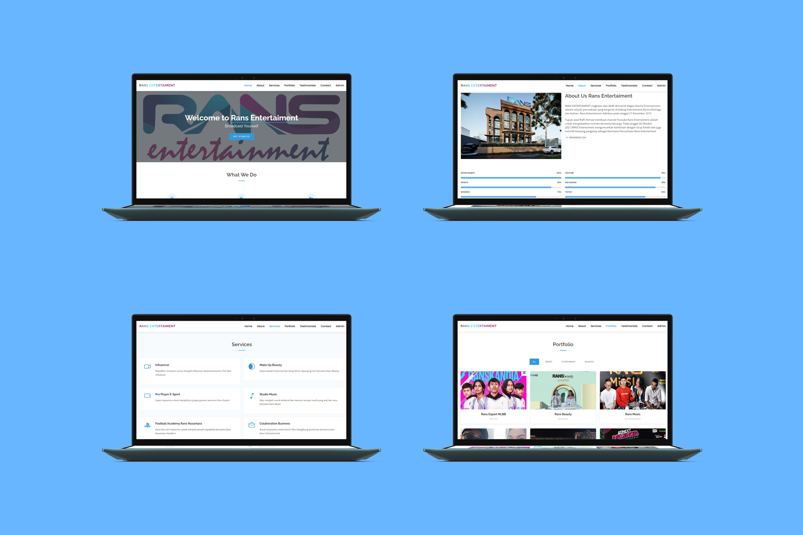
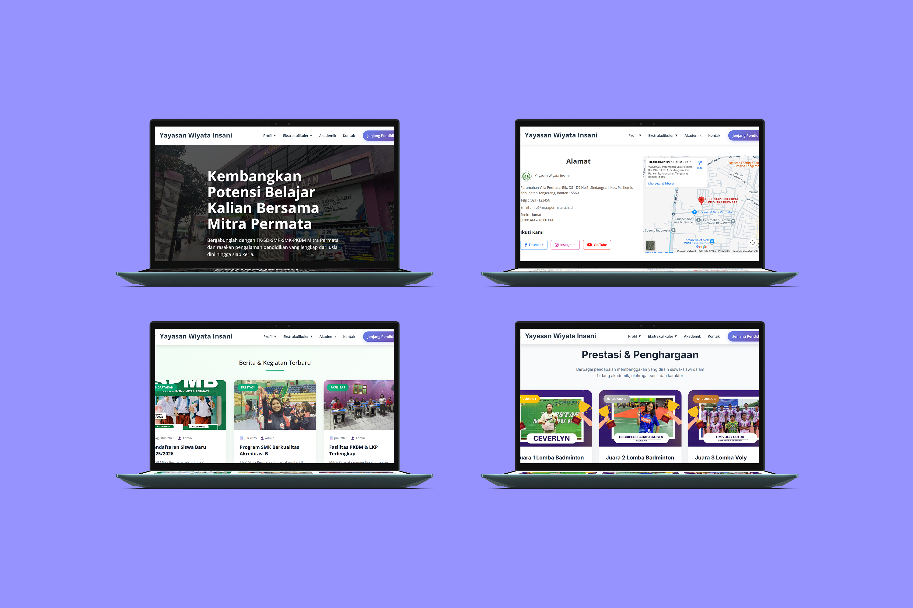
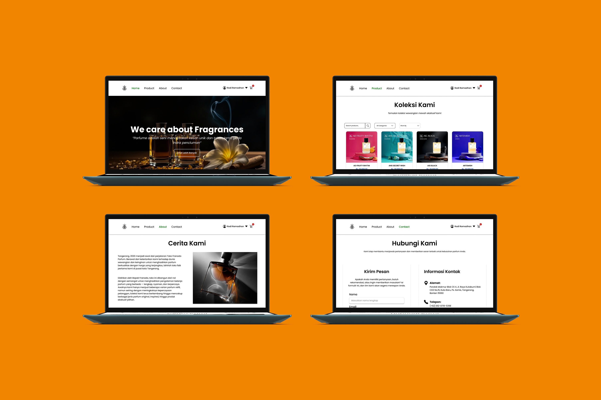
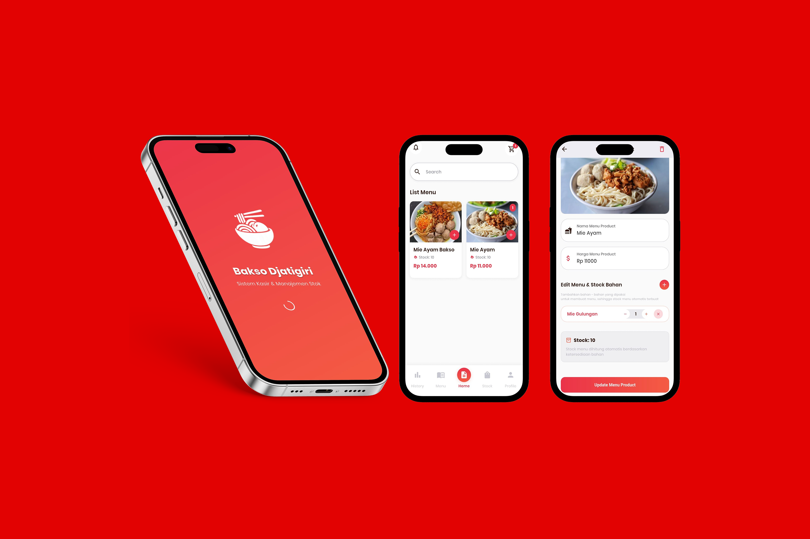

Project
 UI UX
UI UX
Cake Shop
Project tugas kuliah Rekayasa Perangkat Lunak yang bertujuan untuk merancang desain UI/UX sebuah platform toko kue online. Bertujuan untuk menciptakan pengalaman pengguna dalam memesan kue secara online.
 UI UX
UI UX
Store Jersey
Project UAS mata kuliah Desain UI/UX untuk merancang platform e-commerce penjualan jersey olahraga yang memiliki tampilan modern, navigasi yang mudah, serta memberikan pengalaman berbelanja yang nyaman bagi pengguna.
 Website
Website
Store Sepatu
Project UAS mata kuliah Pemrograman Berbasis Web untuk membuat website ecommerce sepatu dengan fitur pencarian produk, manajemen kategori, dashboard admin dan pemesanan melalui WhatsApp.

WebsiteWebsite Company (RANS)
Project mata kuliah Perancangan Web untuk membuat website company dengan mengambil inspirasi dari RANS Entertainment. Website dirancang menggunakan Bootstrap sebagai media informasi perusahaan.

WebsiteYayasan Wiyata Insani
Project Pengabdian Kepada Masyarakat (PKM) membuat website yayasan yang dirancang dengan CodeIgniter untuk media informasi dan pendaftaran siswa baru yang mencakup tingkat TK, SD, SMP, dan SMK.

WebsiteFranada Parfume
Project UAS Technopreneur & Manajemen Proyek membuat website UMKM yang dirancang dengan Laravel untuk media promosi Franada Parfume, menampilkan katalog produk dan informasi brand untuk memperluas jangkauan pemasaran secara digital.

MobileBakso Djatigiri App
Project Aplikasi Mobile UAS membuat aplikasi UMKM di Bakso Djatigiri untuk sistem kasir dan manajemen stok, dilengkapi fitur pencatatan transaksi penjualan dan pemantauan stok barang secara real-time.